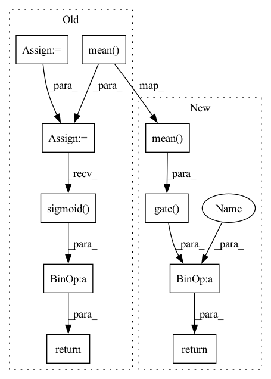

Pattern ID :30677
Before Change
self.conv = ConvBnAct(1, 1, kernel_size, act_layer=None)
def forward(self, x):
x_avg = torch.mean( x, dim=1, keepdim=True)
x_max = torch.max(x, dim=1, keepdim=True)[0]
x_attn = 0.5 * x_avg + 0.5 * x_max
x_attn = self.conv(x_attn)
return x * x_attn.sigmoid()
class CbamModule(nn.Module):
def __init__(self, channels, spatial_kernel_size=7):After Change
self.gate = create_act_layer(gate_layer)
def forward(self, x):
x_attn = 0.5 * x.mean(dim=1, keepdim=True) + 0.5 * x.amax(dim=1, keepdim=True)
x_attn = self.conv(x_attn)
return x * self.gate( x_attn)
class CbamModule(nn.Module):
def __init__(In pattern: SUPERPATTERN
Frequency: 3
Non-data size: 10
Instances Fragment ID: 90494758
Project Name: feng-lab/pytorch-image-models
Commit Name: 742c2d524726d426ea2745055a5b217c020ccc72
Time: 2021-05-27
Author: rwightman@gmail.com
File Name: timm/models/layers/cbam.py
M Class Name: LightSpatialAttn
N Class Name: LightSpatialAttn
M Method Name: forward(2)
N Method Name: forward(2)
M Parent Class: nn.Module
N Parent Class: nn.Module
M File Name: timm/models/layers/cbam.py
N File Name: timm/models/layers/cbam.py
M Start Line: 70
M End Line: 74
N Start Line: 77
N End Line: 79
Before Change
self.conv = ConvBnAct(2, 1, kernel_size, act_layer=None)
def forward(self, x):
x_avg = torch.mean( x, dim=1, keepdim=True)
x_max = torch.max(x, dim=1, keepdim=True)[0]
x_attn = torch.cat([x_avg, x_max], dim=1)
x_attn = self.conv(x_attn)
return x * x_attn.sigmoid()
class LightSpatialAttn(nn.Module):
An experimental "lightweight" variant that sums avg_pool and max_pool results.After Change
self.gate = create_act_layer(gate_layer)
def forward(self, x):
x_attn = torch.cat([x.mean(dim=1, keepdim=True) , x.amax(dim=1, keepdim=True)], dim=1)
x_attn = self.conv(x_attn)
return x * self.gate( x_attn)
class LightSpatialAttn(nn.Module):
An experimental "lightweight" variant that sums avg_pool and max_pool results. Fragment ID: 90494759
Project Name: feng-lab/pytorch-image-models
Commit Name: 742c2d524726d426ea2745055a5b217c020ccc72
Time: 2021-05-27
Author: rwightman@gmail.com
File Name: timm/models/layers/cbam.py
M Class Name: SpatialAttn
N Class Name: SpatialAttn
M Method Name: forward(2)
N Method Name: forward(2)
M Parent Class: nn.Module
N Parent Class: nn.Module
M File Name: timm/models/layers/cbam.py
N File Name: timm/models/layers/cbam.py
M Start Line: 55
M End Line: 59
N Start Line: 63
N End Line: 65
Before Change
self.fc2 = nn.Conv2d(channels // reduction, channels, 1, bias=False)
def forward(self, x):
x_avg = x.mean( (2, 3), keepdim=True)
x_max = F.adaptive_max_pool2d(x, 1)
x_avg = self.fc2(self.act(self.fc1(x_avg)))
x_max = self.fc2(self.act(self.fc1(x_max)))
x_attn = x_avg + x_max
return x * x_attn.sigmoid()
class LightChannelAttn(ChannelAttn):
An experimental "lightweight" that sums avg + max pool firstAfter Change
self.gate = create_act_layer(gate_layer)
def forward(self, x):
x_avg = self.fc2(self.act(self.fc1(x.mean( (2, 3), keepdim=True) )))
x_max = self.fc2(self.act(self.fc1(x.amax((2, 3), keepdim=True))))
return x * self.gate( x_avg + x_max)
class LightChannelAttn(ChannelAttn):
An experimental "lightweight" that sums avg + max pool first Fragment ID: 90494761
Project Name: feng-lab/pytorch-image-models
Commit Name: 742c2d524726d426ea2745055a5b217c020ccc72
Time: 2021-05-27
Author: rwightman@gmail.com
File Name: timm/models/layers/cbam.py
M Class Name: ChannelAttn
N Class Name: ChannelAttn
M Method Name: forward(2)
N Method Name: forward(2)
M Parent Class: nn.Module
N Parent Class: nn.Module
M File Name: timm/models/layers/cbam.py
N File Name: timm/models/layers/cbam.py
M Start Line: 27
M End Line: 32
N Start Line: 34
N End Line: 36